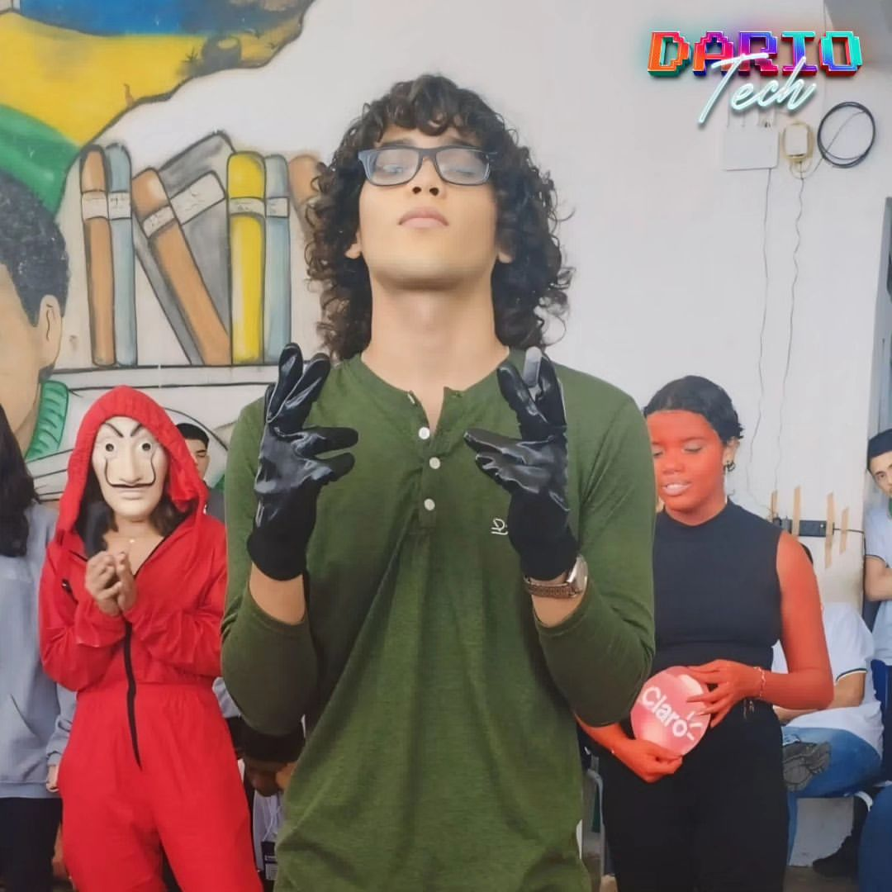
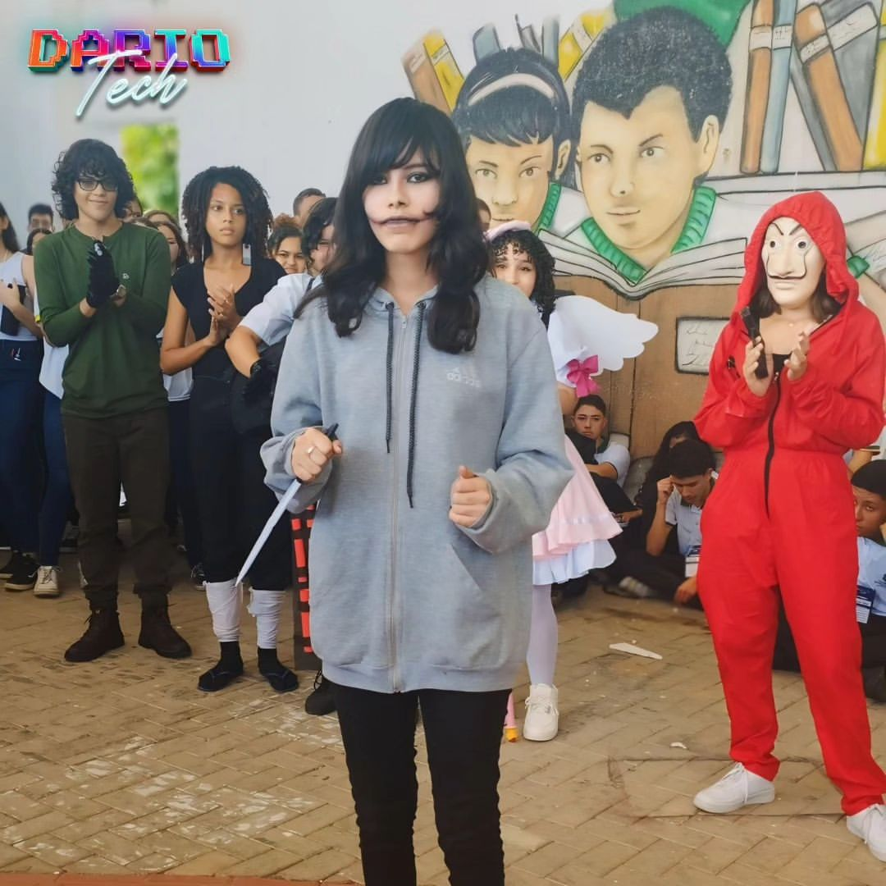

 
O Dario Tech é voltado exclusivamente para estudantes de tecnologia,
com uma programação que inclui palestras e workshops ministrados por diversas empresas e parceiros da área.
Participaram do evento as escolas profissionalizantes de Nova Russas, Ipu, Guaraciaba do Norte, São Benedito
e Monsenhor Tabosa, consolidando-o como um dos maiores da região. Palestrantes da Universidade Federal
do Ceará, incluindo estudantes dos campus de Sobral, Crateús e Quixadá, também estavam presentes.
Os participantes tiveram a oportunidade de adquirir novas habilidades, conhecer as tendências do setor e desenvolver
competências essenciais para o mercado de trabalho. Renomados palestrantes compartilharam suas trajetórias e insights, proporcionando
inspiração para a próxima geração de profissionais de tecnologia.O evento também ofereceu um ambiente propício para networking, possibilitando
a troca de experiências e a criação de conexões entre os participantes. O professor João Paulo, Coordenador dos Cursos Profissionais da área tecnológica da
instituição, destacou que o evento foi uma oportunidade para os jovens terem uma visão sobre o ensino superior na área da tecnologia, com palestrantes que expuseram suas
experiências em universidades renomadas de Sobral e Quixadá.
Nesta palestra, a AVA Aero Imagem apresentará as novas tecnologias de drones aplicadas ao mapeamento e
monitoramento ambiental. A empresa, com vasta experiência no setor, oferece soluções para engenharia, agricultura, e infraestrutura, utilizando drones para gerar
dados precisos e auxiliar na tomada de decisões.
Com destaque para o uso de aerolevantamento, a AVA Aero Imagem já realizou projetos institucionais e comerciais que mostram como suas tecnologias ajudam a preservar o meio ambiente e a planejar o desenvolvimento urbano de forma sustentável. Essa é uma oportunidade única para conhecer o impacto dessas inovações no mercado brasileiro e global.
Confira mais sobre o trabalho da AVA em suas retrospectivas de 2015 e 2016, onde são exibidos casos de sucesso e o impacto dessas tecnologias no campo.
Venha conferir uma apresentação incrível de cosplay com personagens icônicos e criações originais. Os participantes mostrarão seus talentos de interpretação e dedicação na criação dos trajes. Prepare-se para ver performances emocionantes e criativas!
A vencedora do concurso de cosplay encantou o público com sua interpretação e fidelidade ao personagem. Um momento de celebração e reconhecimento para todos os participantes que dedicaram tanto esforço e criatividade.
Os outros participantes também fizeram uma apresentação emocionante. O publico ficou impressionado com suas interpretações e habilidades de cosplay.